Chicken 5 Road is a 20-year-old spot in the river city of Wuhan. Its rich cheese burger, built around a fried chicken leg, has a sweet, smooth aftertaste, and the retro fries, cooked the way they always have been, still taste the way regulars remember.
Identity
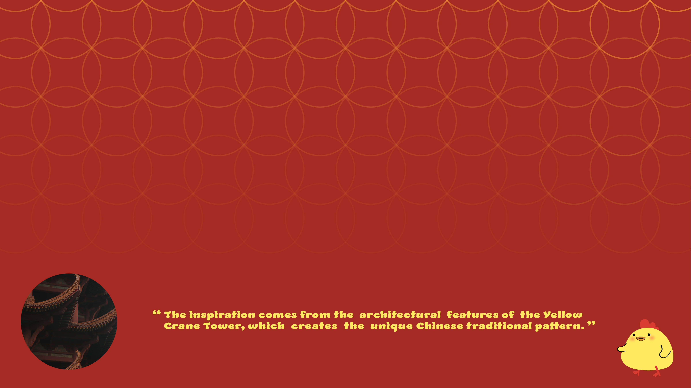
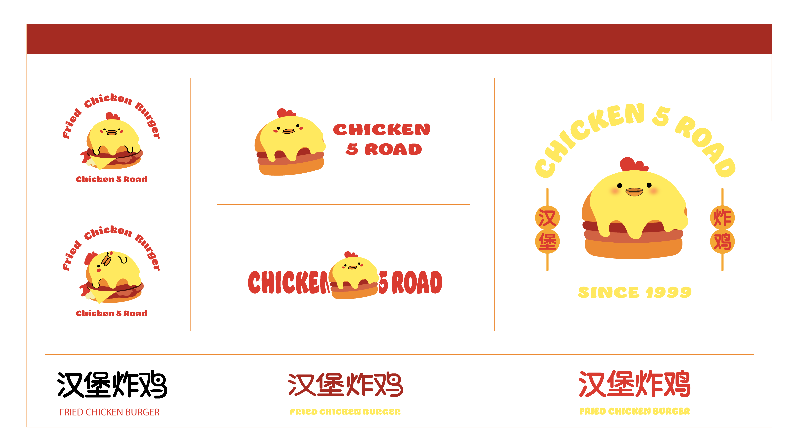
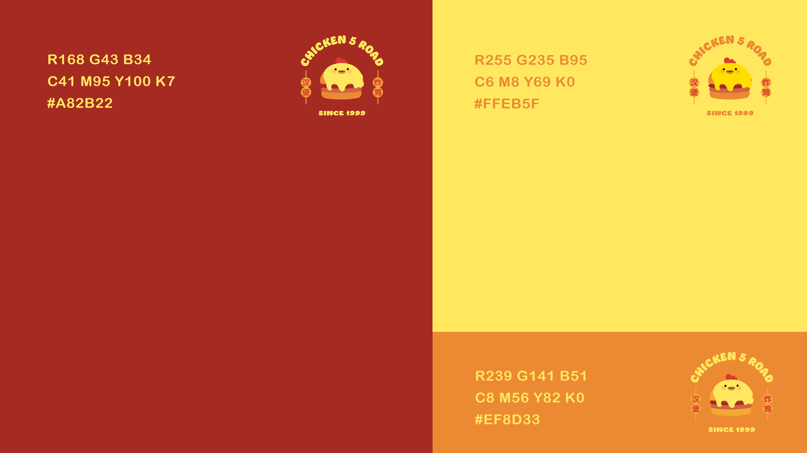
Fryer yellow on a deep braised red does the work: appetite first, brand second. A round, cheerful chick carries everything else.
Packaging
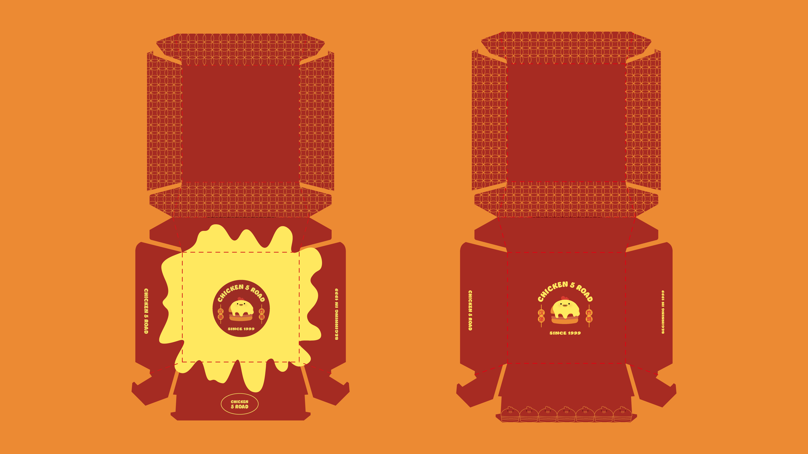
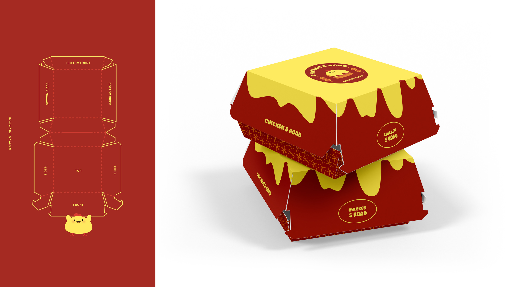
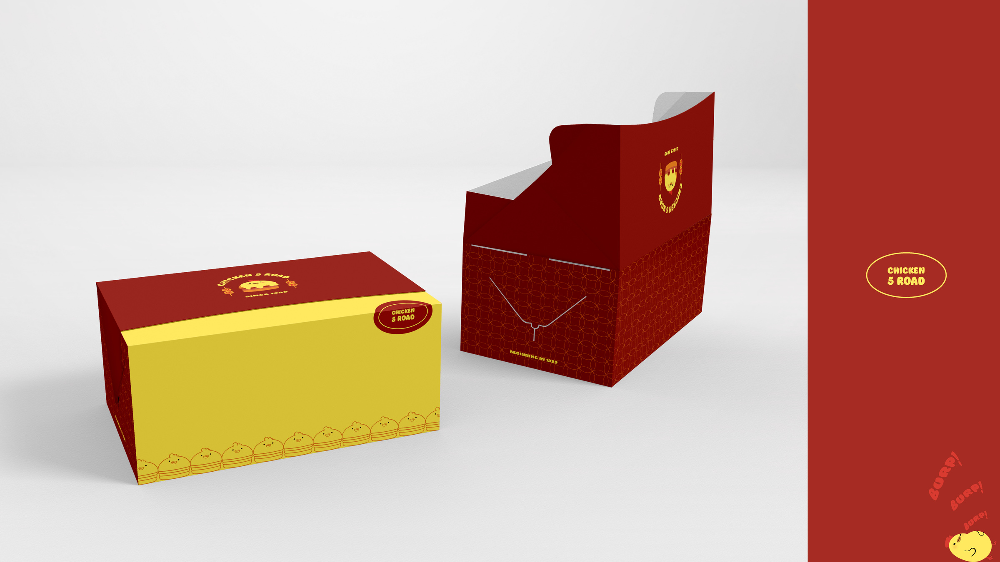
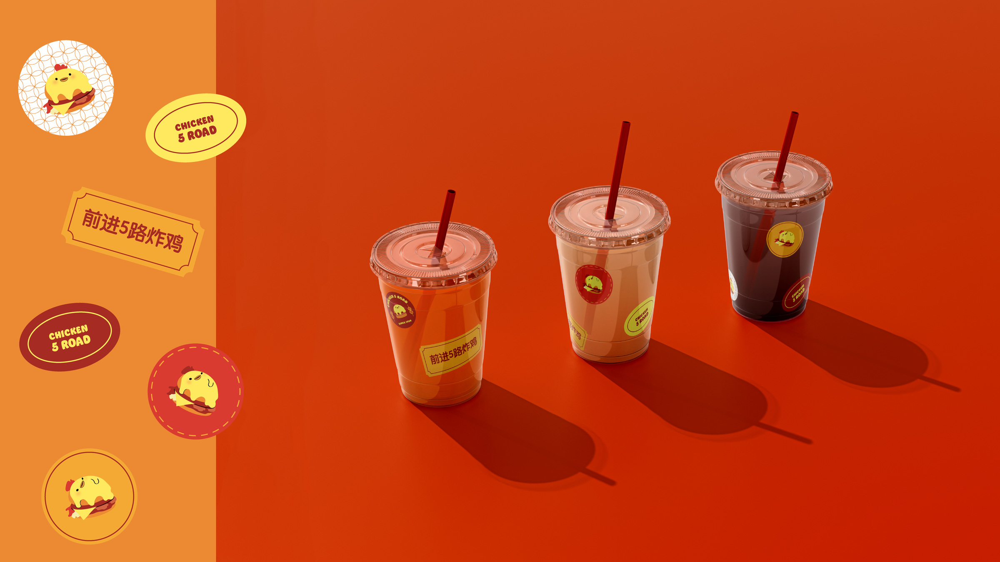
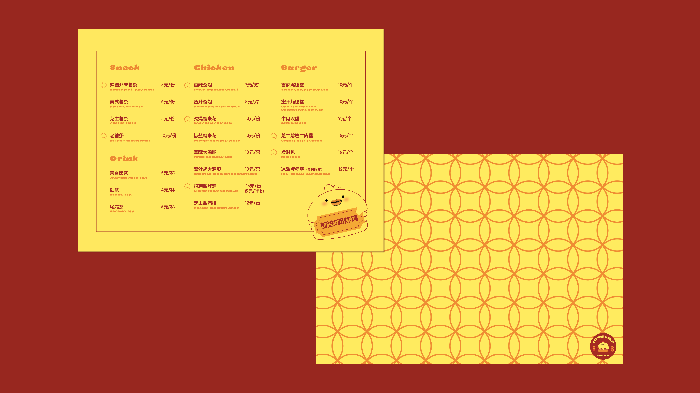
Applications
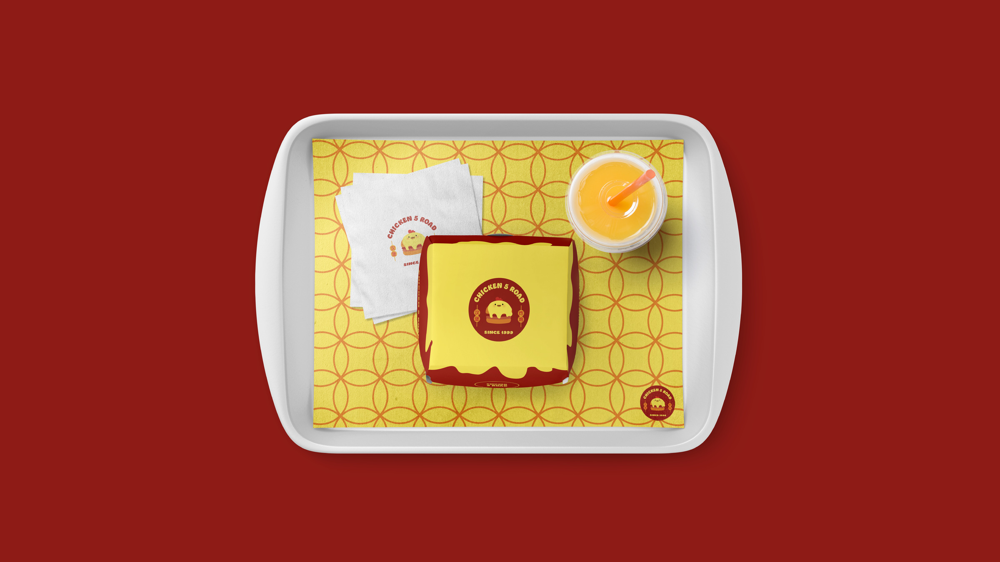
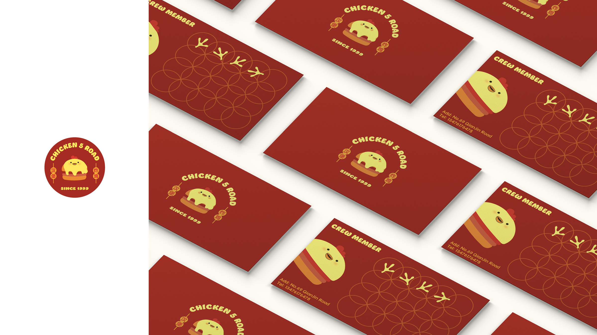
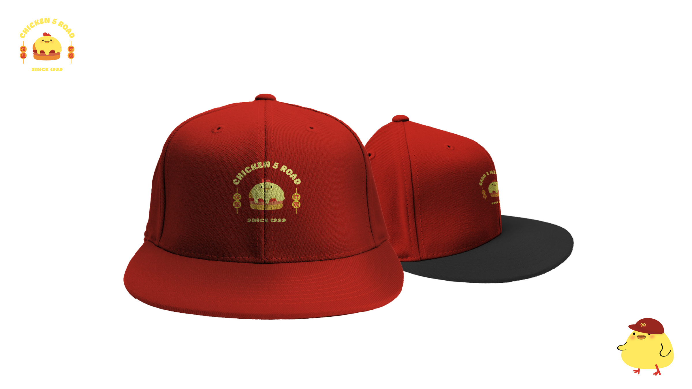
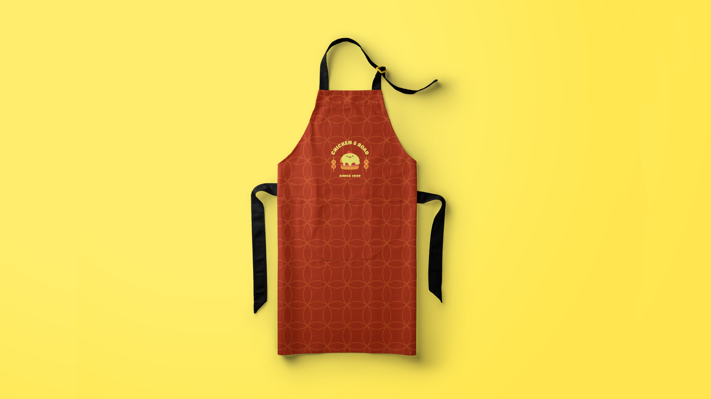
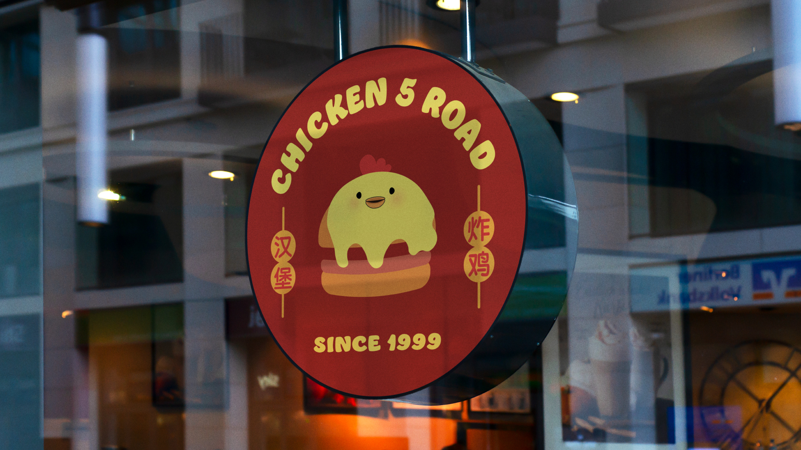
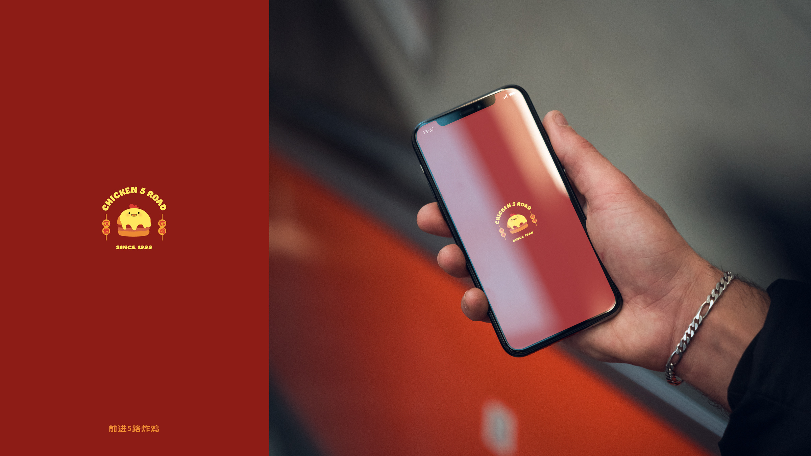
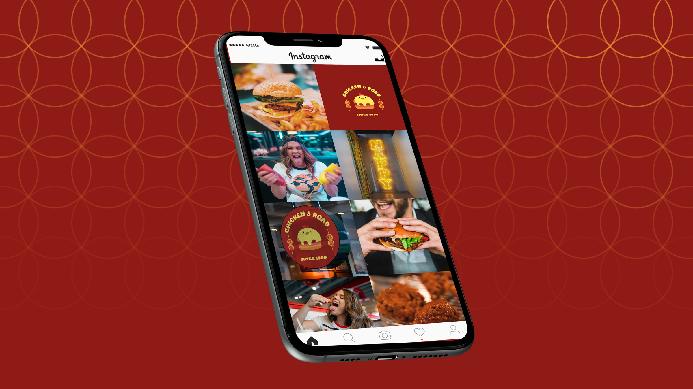